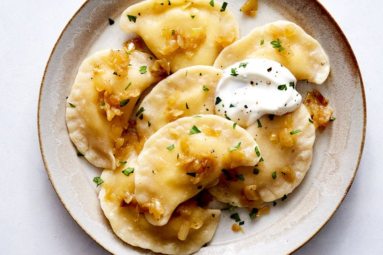

Pedaheh (Perogis)

Description
Pedaheh (better known as perogis) have been a tradition in my family for about as long as I can remember. We would go over to my grandmother's house nearly every year
a week or so before Epiphay (or as we called it "Ukranian Christmas") to make them. The are delicious, but definitely not good for you.
Ingredients
- 2 cups of flour, plus more for flouring
- 1 tsp salt
- 6 Tbsp butter, plus more for serving
- 1 egg
- 1/2 lb potatoes
- 3 yellow onions
- 1/2 cup cheddar cheese
- salt and pepper to taste
- Sour cream, for serving
Preperation
- Combine flour and salt in a bowl
- Heat 1/2 cup of water and 3 Tbsp butter until melted, then pour butter mixture into flour mixture while stirring
- Stir in egg
- Knead dough until smooth, then cover with damp towel and rest for 30 minutes
- While dough is resting, peel potatoes and cut into cubes
- Add potatoes to a large pot of salted water and boil until potatoes are tender
- While potatoes are cooking, melt 3 more Tbsp butter and add chopped onions and season with salt and pepper
- When potatoes are done, mash
- Once dough is ready, roll out and use glass to cut equal circles out of the dough
- Fill the perogis by putting a small amount of potatoes, onions, and cheese onto one half of each circle, then close and crimp the edges
- In a large pot of boiling water, work in small batches by putting the perogis in and boil for about 5 minutes
- Once all perogis are done boiling, prepare a buttered pan and again work in batches to pan fry perogis until they are golden brown on each side
- Serve hot with butter, onions and sour cream